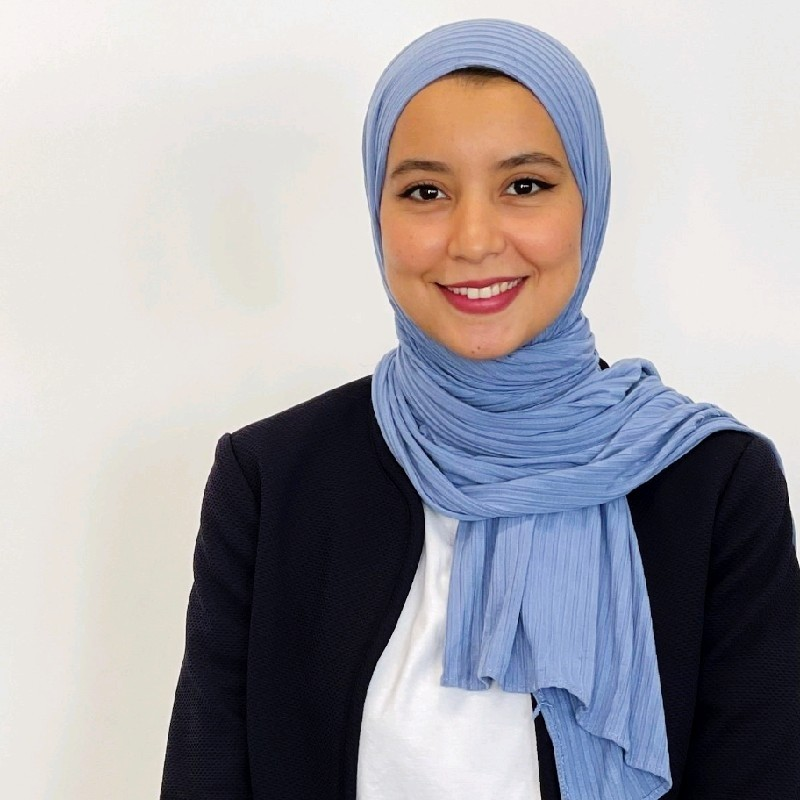

Informations personnelles
Name: Lemghari Amal
E-mail: lemghari99amal@gmail.com
Tel: +212 642866472
Mobilité: National
Situation familiale: Célibataire
A propos de moi
Durant mon parcours j'ai eu la possibilité d'acquérir de nouvelles compétences, et de vivre de nouveaux défis qui se concrétisent dans l'intégration du domaine d'informatique. Ce qui ma permis de développer de nouveaux acquis en termes d'écoutes, adaptation et communication
Formations
2022-2024: En cours de préparation d'un diplôme, "Informatique", Centre Informatique et Gestion Ville Nouvelle-Safi, SAFI.
Du 16.05.2023 Au 18.05.2023: Formation, "Finding a Job is a Job"(FJIJ), Education for Employment-Maroc(EFE-Maroc), SAFI.
2018-2022: Licence fondamentale, "Sciences de la Matière Chimie"(SMC), Faculté Polydiscuplinaire de Safi(FPS), SAFI.
2017: Baccalauréat, "Sciences physiques", Lycée Al Hidaya Al Islamiya, SAFI.
Expériences Professionnelles
Du 01.03.2023 Au 01.05.2023: Technicienne de laboratoire, stagiaire, Service Laboratoire d'Analyses Médicales, Centre Hôspitalier Mohammed V
- Réception, prétraitement et conservation des échantillons.
- Effectuer des analyses qualitatives et quantitatives des échantillons de matériel.
- Techniques du prélèvement veineux(intraveineux).
Du 06.02.2023 Au 28.02.2023: Administrateur, stagiaire, Service Pharmaceutique, Centre Hôspitalier Mohammed V
- Gestion de stocks.
- Traitement de bons de commandes.
- Rédaction de bons de sorties.
Du 05.01.2023 Au 05.02.2023: Technicienne de laboratoire, stagiaire, Centre Régional de transfusion Sanguin(CRTS), Centre Hôspitalier Mohammed V
- Immunohématologie donneurs(Groupages sanguins et phénotypage sur plaque et sur microplaque).
- Immunohématologie receveur.
- Production de produits sanguins labiles.
- Sérologie sur automate.
Compétences Dégitals